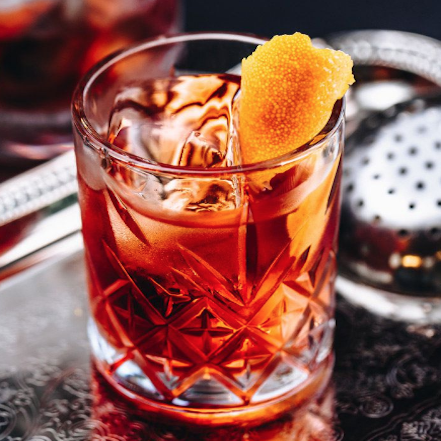
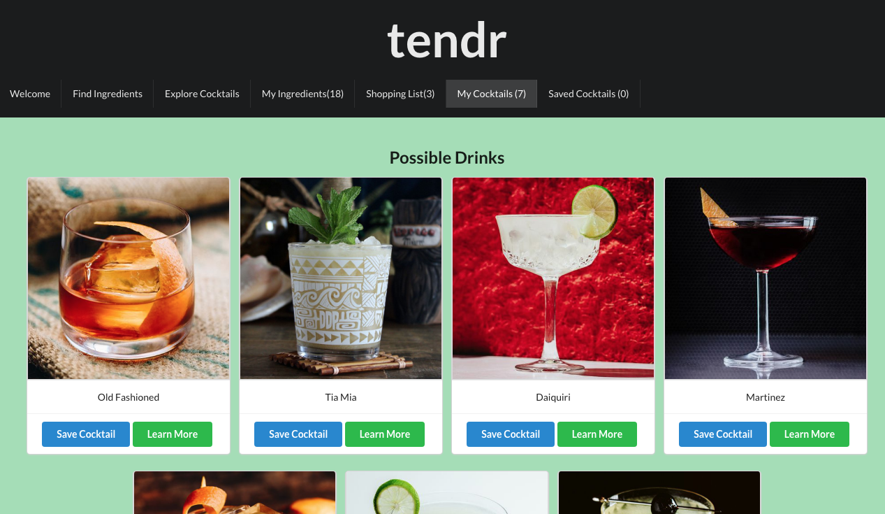

home bar manager
Tendr is a home bar app that allows users to see what cocktails they can make with the ingredients they have at home. Additionally, users can write notes on recipes to reflect any alterations they would make, add items to their shopping list, and see which ingredients are the most commonly used.
Tendr is the most challenging project I have completed so far. It was my first time implementing Redux for global state management as well as my first foray into JWT auth. While using both of these technologies for the first time was difficult and at times frustrating, it expanded my knowledge of React tremendously.
I am excited to continue working on this project. The next features I want to add are the ability for users to upload their own custom cocktails, and websockets to allow users to chat. I believe these two features would make the app much more engaging for users by starting interesting debates about techniques and recipes. Cheers!